📑 文章目录（17 节）
最近在评论区经常收到类似“想知道 1048式的练习方法”、“正在练 1048式但好难”、“左手不听使唤”这样的提问。
所以（？）这次就来针对在 IIDX 玩家群体中广为普及的“1048式”，详细讲讲它的练习方法和窍门。
什么是 1048式
1048式（Toshiya 式）是指以下图所示的手指摆放作为基准位置（Home Position）的指法（运指）。


它的特点在于转盘侧的指法，手型像是让拇指从食指下方穿过去一样。
顺带一提，1048式这个名称源自推广这套指法的玩家名（DJ 1048）。
1048式的优点
擅长搓盘（转盘侧的手指离转盘很近）
大家经常说 1048式“打键盘强、打发狂强”。这固然没错，但它最大的优势其实是“擅长转盘”。
让我们聚焦于转盘侧的手指，与常见的“对称固定”做一个对比。
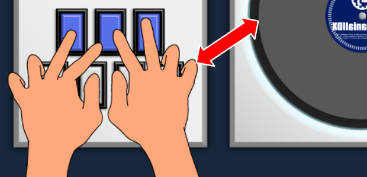
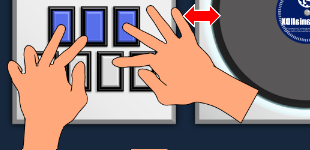
从上图可以一目了然地看出，1048式的小指离转盘要近得多。
遇到带皿配置需要瞬间变指（崩指）时，对称固定必须先张开手指、把整个手的重心往右挪；而 1048式只需要稍微向右甩一下手腕，就能轻松够到转盘。
这就是 1048式擅长处理皿复合的原因。
擅长 1-2（6-7）交互（Trill）
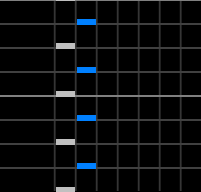
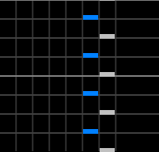
在对称固定中，1-2 交互大多是用无名指→中指→无名指→中指……来打；而在 1048式中则是拇指→中指→拇指→中指……（或拇指→食指→拇指→食指……），由于大量使用了比“无名指”更有力的“拇指”，按起来轻松得多。
出于同样的理由，它在面对螺旋楼梯（1→2→3→2→1→2…）以及折返楼梯配置时也非常强势。
容易过渡到手腕搓盘（手首皿）

很多人选择练 1048式的理由之一，应该就是“想学手腕搓盘”吧。随着近年来谱面难度不断膨胀，手腕搓盘如今几乎成了标配技巧。
1048式可以直接保持基准手型不动就无缝过渡到手腕搓盘，因此对想练手腕搓盘的玩家来说是必修指法。
1048式的缺点
初期手型别扭，上手难度较高
因为 1048式转盘侧的手型平时根本不会用到，刚开始练的时候，哪怕打平时用来热身的曲子，你可能都会觉得大脑快要过载烧起来了。
刚开始哪怕开着自动搓盘（Auto Scratch）也没关系，最重要的是先把基准键位的手型刻进肌肉记忆里。
不擅长 1-3（5-7）交互（Trill）
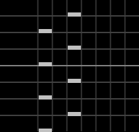
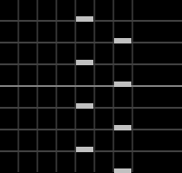
1048式虽然擅长 1-2 交互，但对 1-3 交互稍微有点吃力。
表面上看是用拇指→食指→拇指→食指……这两根很有力的手指，似乎应该很简单，但因为没法借助左右摇动手腕的发力，只能全靠指尖独立发力去敲，所以控制起来相当困难（相比高速交互，你在中低速交互上反而会更明显地感到难控）。
而对称固定则是拇指→无名指→拇指→无名指……，可以一边动手指一边配合手腕左右倾摆发力，因此相对更容易控制。
转盘侧的手难以帮忙补 4号键／音符集中在非转盘侧时会吃亏
1048式默认把食指放在 3号键（2P 侧为 5号键），所以很难用转盘侧的手去补按 4号键。
此外，如果习惯将惯用手放在转盘侧，就意味着非惯用手要承担超过一半的键位，相比对称固定，对非惯用手的强度要求会更高。
虽然近年来靠完全固定硬拼体能（纯硬件刚过去）成了主流，但从指法理论来说，最理想的做法还是将 1048式与对称固定结合使用，彼此弥补弱点。
1048式的练习方法、技巧与学习路线图
接下来为大家介绍具体的练习方法与诀窍。
一开始开自动搓盘（Auto Scratch）也完全没问题
最初请先保持完全固定，把精力全部集中在适应基本手型上。这一点在练习其他任何指法时也一样。在适应之前，建议把绿数字调得比平时慢 +10～20 左右。
选几乎没有转盘的曲子，或者直接开启自动搓盘，反复刷乱打系和同时押系的谱面。
尤其是同时押，必须把过去旧指法的肌肉记忆彻底覆盖掉，因此有一定基础的高阶玩家建议多以同时押谱面为主进行乱打练习（开 RANDOM 刷谱）。
按经验来说，大约练满 20 个小时左右，就会逐渐适应新指法了。
刚开始手可能会酸痛，但只要熬过适应期，你一定会体会到 1048式有多么舒适。
习惯带皿配置下的变指：3:5 半固定
除非手掌大得惊人，否则遇到带皿配置都必须变指（崩指）。
变指的基础就是被称为“3:5 半固定”的指法。需要根据情况灵活切换，有时用右拇指去按 3号键（2P 侧为 5号键），有时用左拇指去按。
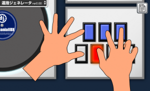

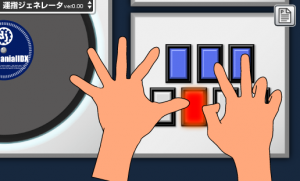
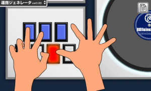
适应 1048式手型后，就可以在游玩时有意识地提醒自己“只要来皿了，就用非转盘侧的手去补 3号键（5号键）”。老实说，刚练的时候会觉得相当难。
特别是右撇子打 2P 侧的玩家，需要用并非惯用手的左手独自覆盖 7 个键中的 5 个键，初期会感到非常吃力。
不会 3:5 半固定、或 2P 1048式左手不听使唤时该怎么办
关于指法收到的最多提问就是“在 2P 侧左手就是动不好”。
虽说都是“左手不听使唤”，但其实分为以下两种情况：
- 键盘音符一多就按不过来
- 转盘过来时没法顺畅补位
第 ① 种纯粹是地力、体能、练习量不够，或者手型姿势不对，这里没什么特别好建议的，练就完了。
关键在于第 ② 种情况——转盘一来，就没法接住原本由转盘侧手负责的按键。
原因在于，左手还不习惯补位时的指法和手型。举个例子，你能单靠左手按下下面这种配置吗？
估计大部分人在 3 和 5 之间总有一个按不到。因为平时左拇指一直放在 3号键上，大脑里压根就没有“用无名指（或中指）去按 3号键”的意识。
要解决这个问题，就需要有意识地拓展左手的覆盖范围。
具体做法是，先花几个小时用下面这套固定指法强行打一打：
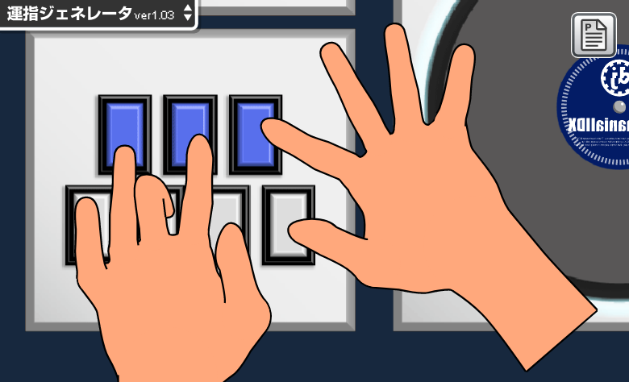
正如看上去的那样，这套指法打纯键盘很弱，但在应对皿复合方面几乎毫无死角。不擅长用左手补位的玩家，用这个手型去专练皿复合效率最高。习惯之后，就能很自然地从 1048式切换过来了。
如果觉得中指太挤太别扭，用下面这种固定摆法也可以。我自己就是下面这一派。
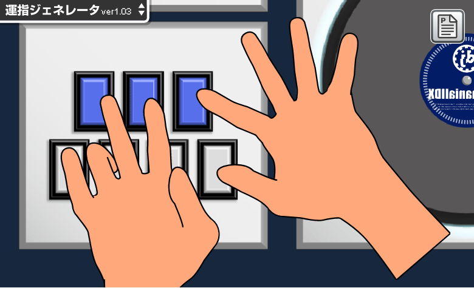
此外，打 DP（双打）或者练习单手打法也能有效拓宽左手的覆盖范围，感兴趣或者不擅长左手补位的玩家不妨试试。练成之后，处理带皿配置（尤其是连皿）会轻松很多。
掌握拇指平按（亲指ベチャ押し）
当键盘和转盘同时忙得不可开交、根本没有余力用 3:5 半固定去补位时，就要用到名为“拇指平按（亲指ベチャ押し / 拇指滑动按）”的指法。


“拇指平按”就是单靠转盘侧的拇指一根手指同时负责 1号键和 3号键；只要手掌有一定大小，甚至可以在搓盘的同时顺带把 2号键也一起盖住。
我自己会在 嘆きの樹（SP ANOTHER）的牛仔裤段（Denim）或者全押＋皿的地方用到这招。
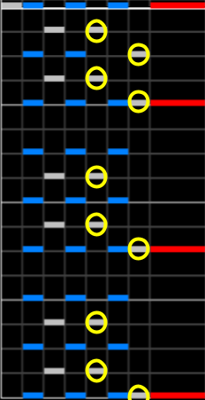
只要在 1048式的基础上学会拇指平按，大约 99% 的配置都能接得住。剩下那 1% 左右（比如 冥 ANOTHER 的 BPM 190 段落之类），老实说不用手腕搓盘确实很难应付。
极具参考价值的 1048式玩家与手元视频
最后，分享几位我个人认为堪称 1048式教科书级范本的玩家和手元视频。（绝对不是因为我自己懒得拍）
如果刊登有任何问题，或者大家觉得“这个视频更适合参考哦～”，欢迎随时告诉我。
DJ 1048
大名鼎鼎的 1048式创始人。上面这段游玩视频里，他根据谱面非常自由地满场移动变指（偏向高手向风格），对新手来说可能不太容易直接照搬，但他那极其优美的手型姿势非常值得当成范本来学习。
特别是搓盘时的手部动作、手腕摆放位置等等，有很多光是看俯拍视角根本看不出的细节，极具参考价值。
DJ SEIRYU
另一位极力推荐作为 1P 1048式典范的，是在 BPL 赛场上同样大放异彩的 SEIRYU 选手。他的动作没有任何多余晃动，手型也极为工整漂亮。
SEIRYU 选手的一大特色是正谱（正规）下的高分能力极强，实战大赛发挥极稳。他本人在博客上写的下面这篇文章堪称必读，千万别错过。
以上就是 Safari.com 风格的 1048式详解啦～
因为这部分正好是评论区提问频率最高的话题，所以特意写了这篇文章，希望能帮大家一次性解决疑惑，不知道读完感觉如何呢？
关于其他各种指法，我在以下文章中做了简明扼要的盘点介绍。
如果对文章内容还有任何疑问，欢迎在评论区留言，我会尽快回复大家。
💬 读者评论与作者答疑（1 组对话）